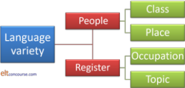
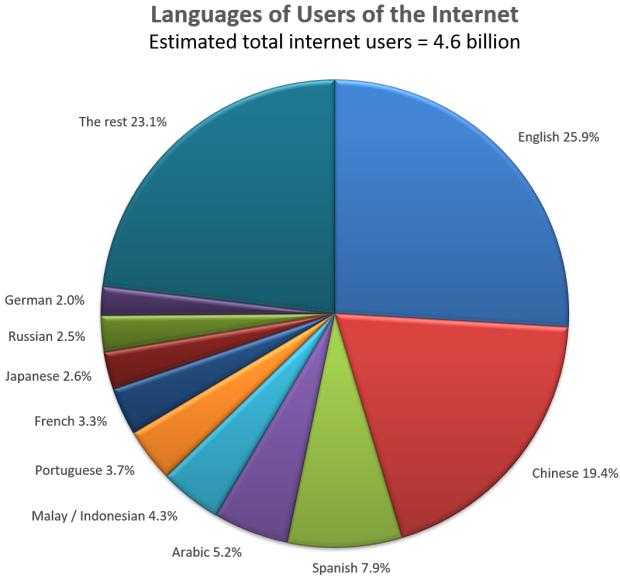

Varieties of English and other Englishes

As a starting point, we'll assert something: teachers need to know about varieties of English and be familiar with the characteristics of the ones their learners are most likely to encounter. Crystal, 1998:17, puts it like this:
Teachers need to prepare their students for a world of staggering linguistic diversity. Somehow, they need to expose them to as many varieties of English as possible, especially those which they are most likely to encounter in their own locale. And, above all, teachers need to develop a truly flexible attitude towards principles of usage.
Developing the flexibility that Crystal sees as important implies that teachers should not make an a priori assumption that their own dialect (yes, everyone has one) is the sole norm against which their learners' production should be measured. What is needed is a step back to view the wider world and some understanding of its staggering diversity.
All languages vary. The number of speakers there are, the range
of contexts in which the language is used and the geographical spread of
the language will determine just how much variation occurs.
Even those languages which are partially overseen by institutions
charged with maintaining linguistic purity (such as the various
academies around the world) will vary by region and context as well
as between individuals and in those operating in certain fields.
(The term 'variety' encompasses phenomena such as accent, dialect,
sociolect, idiolect and so on which are, in some cases, quite difficult
to define.)
 |
Before we go on, can you take a stab at the answers to:
|
- It depends a little on how you count but a figure of between 375 and 400 million is the usual statistic. Approximately the same number speak English as a second language (often in official or occupational environments) and perhaps a billion speak it as a foreign language.
- English is an official language In roughly 60 countries and there are others, such as Israel, where the language has no official status but is widely used. Neither The United Kingdom nor The United States of America has an official language, by the way.
- It depends: how do you define standard?
By most definitions, however, there are at least 12:
British English is usually abbreviated to BrE and US English to AmE and that convention is followed on this site.Australian
British
Canadian
Caribbean
East African
Hong KongIndian
Irish
New Zealand
Singaporean
South African
US - Within larger areas where English is spoken, other identifiable
forms of the language exist although they may not be recognised as
standards in the way that the twelve cited above are. Here's a
short list of places where English is widely spoken in a way that is
recognisably different from other areas of the world because there
are variations in vocabulary, pronunciation and, sometimes, grammar.
People unfamiliar with the varieties would probably have
difficulty, for example, distinguishing Southern English from
Channel Island English, Nepalese English from Indian English or
between the varieties which exist in the Caribbean but
locals would have no such difficulty.
Barbados
Belize
Bermuda
Brunei
Burma
Cameroon
Cayman Islands
Channel Islands
England (North)
England (South)Falkland Islands
Fiji
Ghana
Gibraltar
Guyana
Honduras
Hong Kong
India
Isle of Man
JamaicaKenya
Liberia
Malawi
Malaysia
Namibia
Nepal
Nigeria
Pakistan
Philippines
Saint Vincent and the GrenadinesScotland
Singapore
South Sudan
Sri Lanka
The Bahamas
The Gambia
Trinidad and Tobago
Uganda
Wales
Zimbabwe
 |
How does language use vary? |
There are a number of factors at work but we can condense them into two main categories, like this:

There are two main factors to consider:
- Who is using the language?
- Language use will vary depending on where people come from and their
social class. The two factors interact so, for example,
an upper-class variety in one geographical or political area may
differ from a lower-class variety in the same area.
Ethnicity also frequently plays a role. - What is the language being used for?
- Language use will vary by register. Occupational registers include things like jargon and special forms of English (legalese, IT-speak, medical language and so on) and topic-based registers will include things like sports registers, special hobby registers (can you read a knitting pattern?), pastimes and so on.
 |
Variations on a theme: lects |
A lect is just another term used by sociolinguistics for a variety of a language. It's a useful neutral term to use, however, because it avoids the connotations that some percieve in terms such as dialect.
Dialect |
This is not the place to enter into the argument about whether a dialect is a language or not. If you want to know whether a dialect qualifies as a language, check the Ethnologue site (linked below).
As a rule of thumb, a dialect is distinguished from other
variations in language use by having unique phonological,
grammatical and lexical features but is, nevertheless, still
generally comprehensible to speakers of other varieties of the same
language. Examples include Dutch, Flemish and Afrikaans, Hindi
and Urdu, Czech and Slovak, US and British English and many more
varieties of what are essentially the same language around the
world.
For political, social or cultural reasons, speakers of some dialects
may like to suggest that their variety constitutes a separate
language and should be respected as such and, of course,
comprehensibility to users of other varieties exists on a cline from
not at all to fully comprehensible. On the other hand, there
are similarly grounded pressures in some cultures to minimise
differences and class what are barely, if at all, mutually comprehensible
languages as varieties of the same language.
Dialects vary like this:
- The lexicon
What the United States calls a hood, the British call a bonnet, what Canadians call an automobile or car, Indians might refer to as a motor, what the British call a dunce might be called a bubu in Jamaica, what in parts of the USA are referred to as britches would be pants or trousers elsewhere and so on and on and on.
Specific words are in use to describe things which exist in the local environment but may not exist elsewhere in the world and the influence of local languages on the vocabulary and grammar of English is often identifiable. - Grammar
There are grammatical variations, too. In the USA the question might be
Did you just get here?
but in Britain, that would probably be
Have you just got here?
In Southern England, you was is common and in the north, I were is similarly frequently heard. Both are considered non-standard forms.
Other grammatical differences are observable so, for example, in some varieties of English, write can be used with a direct object as in:
I'll write him
but in others, that is not allowed and
I'll write to him
is preferred.
Both forms will, naturally, be understood by all speakers.
For more on the grammatical differences between British and American English, see the article (linked below). - Spelling
The differences between BrE spelling and AmE spelling are mostly traceable to the reforming zeal of the American lexicographer, Webster. In general, AmE spelling is simpler and more consistent. That's not the same as saying that it's any more regular, of course.
Other varieties, such as Canadian English, often use a mixture of BrE spelling and AmE spelling. - Pronunciation
varies regionally, too, of course. Everywhere.
Depending on the precision with which a local accent is defined, it may be confined to a very small area (a single Caribbean island or, in some cases, areas of large cities which have identifiably different accents from their neighbours). At other times, we may speak of a British accent, an American accent, an Indian accent and so on with no recognition of the very significant differences such descriptions hide.
If you are interested in the major differences between British and American pronunciation, see the answer linked below.
 |
Sociolect |
This refers to the way that language varies by social class, gender, age or ethnicity. Trudgill, 2003, defines it this way:
A variety or lect which is thought of as being
related to its speakers' social background rather than geographical
background. A social class dialect is thus a form of sociolect.
(Trudgill, 2003:122)
and he also defines an acrolect as being the highest status
variety with basilect the lowest and various mesolects somewhere in
between. The situation is not simple and further complicated
by people's ability to code switch, alternating between a
high-status variety and a lower-status variety as the situation
demands.
Certain settings, for example, church sermons, academic lectures,
news broadcasts and so on require, in many cultures, the use of a
distinctively different and often higher-status variety of a
language than do other settings, such as conversations with family
and friends, TV soap operas, personal letters and so on in which the
use of slang and colloquialisms is more common and, in fact, often
required.
Some sociolects, such as African American Vernacular English can
differ very markedly from other standards, for example in omitting
copular verbs so:
He here
serves as:
He is here
In Britain, too, a traditional stratified society, variations in
grammar, lexis and pronunciation are very noticeable in acrolects
and basilects. For example,
brother may be pronounced not as /ˈbrʌð.ə/ but as
/ˈbrʌv.ə/
hello may be pronounced without the initial /h/
and so on.
This is also not the place to enter the argument about how class is (or
even whether it should be) defined. Suffice it to say that it is
unlikely that you will hear the British royal family say
Gis the
salt, mate
or find Austria pronounced as Orstria
or
One wonders where one's drill has got to
uttered
on a British building site.
Grammar varies here, too, with a noted
preference in some classes, for example, to use we was instead of we were
and ain't instead of isn't and so on.
There are variations in the lexicon, too, with words
such as brill, diss, righto, toodle pip, spiffing, yep, yeah,
aye, nah, nope, nay being used variably by certain age groups,
socioeconomic groups and so on.
Pronunciation can vary markedly with social class. For example,
pronouncing the 'r' in father is considered high status in some
varieties (such as Southern USA) but low status in others (such as
Britain and the American East Coast).
Such considerations go in and out of fashion, of course.
 |
Accents and idiolects |
This is the most obvious form of language variation and we are all familiar with the fact that the origins of speakers of our own language are often identifiable from the way they pronounce the language. Sometimes, people make efforts to reduce the impact of their regional variety in the interests of sounding more educated and at other times, people may deliberately emphasise a regional accent in order to integrate with certain groups.
 |
British and US varieties |
Setting out all the differences in varieties of accents (and dialects) which have been identified by generations of scholars is neither possible not useful but the maps of two important inner circle areas look like this:
 |
 |
And they hide quite significant differences, of course, as the speakers of the varieties will make clear if you ask. Borders are not shown between the varieties because, of course, they do not really exist. Each area flows seamlessly into the adjacent regions.
Accent
varies by region and by social class as we have seen but it also varies
from person to person. The technical term is that we all have an
idiolect and pronounce certain words slightly differently from those
around us and that's one of the ways we can know instantly who is
telephoning us if it is someone we know well.
An idiolect may also, incidentally, include certain words that we
habitually use and certain types of expression which are unique to us or
the people we live with.
Everybody, incidentally, has an accent whether it is a standard one or
not and everyone also has a dialect.
 |
Style and register |
There is separate guide on this site to style and register (linked below). For our purposes we will distinguish them rather crudely like this:
- style
- is to do with level of formality and social appropriateness. When is it, for example, acceptable to use a strong regional accent, slang or context-specific lexis and when is an attempt to speak more carefully, choose standard lexis and suppress a local accent more acceptable?
- register
- is to do with the topic and context of where the language is
used. For example, among lawyers, a certain type of lexis
and some grammatical structures will be commonplace when they
are communicating in a professional context. They are
unlikely to use the same forms outside that domain, however.
IT-speak is notoriously laden with specialised vocabulary and structures with which those outside the field may have no familiarity at all.
All professions (including ours) have an internal set of lexemes and, in some cases, grammatical structures which are not accessible to outsiders. Familiarity with a topic-specific argot is one of the ways we establish our professional credentials and may claim to be a member of the in group.
Style and register often work in tandem so even slang expressions
among certain groups (medics, lawyers, football players, media
workers and so on) may be significantly different from those used in
other domains.
The social setting in which
the user of a language happens to be will often determine how much
subject-specific language, dialect, accent and slang are appropriate.
The ability to switch codes when the need arises is a common one and
often an underestimated communicative and social skill.
 |
Summary and some technical terminology |
Language variety has been a serious subject of study for may
years so it is unsurprising that it has its own set of technical
terminology. It has, in fact, an argot, so to speak, which
serves to allow scholars in the area to communicate with greater
precision than those who are not serious students of language
variety and (as with all such things) it excludes others who are not
professionals or serious scholars in the field.
Here's a summary of the main terms you may encounter and a
mini-glossary. The fourth column contains a few more examples.

Here's the glossary:
- sociolect
- For our purposes, we define sociolect as the dialect used by
members of an identifiable social class, for example, British
public-school English.
It is possible to see argots, slang and jargon, standard varieties and registers and styles as sub-categories of this general term but, for clarity's sake, we have separated them here. - argot
- This is a term less disparagingly used than jargon to refer to the use of terms specific to a particular group or class, for example, football managers and sports journalists.
- slang
- This term is often used disparagingly to refer to casual or 'wrong' language use. Slangs are generally spoken forms characterised by very informal uses and often confined to certain class and regional groups such as, for example, Cockney Rhyming Slang.
- jargon
- For most purposes jargon may defined as the use of particular lexemes confined to certain areas of study, trade or interest. A defining characteristic is that such terms are obscure to those unversed in the area of concern. Certain sports have associated jargon and most trades and professions develop jargon terms understood only by those within them such as legal jargon used by professional lawyers.
- standard
- The online Oxford Dictionary defines the term as something used as a measure, norm, or model in comparative evaluations and that definition is adequate for our purposes because a standard form is that which is seen as the baseline from which other varieties differ. Standard Australian English differs, for example, from Standard British English but also differs from the varieties used by members of certain social and occupation groups within Australia.
- register
- This term is defined on this site above as being language use to do with the topic and context of where the language is used. It is distinguished from style, which refers to levels of formality although certain social settings will also require or allow the use of certain styles. Examples include, IT-speak, medical English, aviation English, athletics language and hundreds more.
- style
- is defined above as concerned with the level of formality
which is seen as appropriate to use in certain settings (so is
closely connected to but not synonymous with register).
Joos (1961) identified five styles: frozen (notices, quotations etc.), formal (precise technical or other forms such as may be used in a lecture), consultative (such as may be used between doctor and patient), casual (as used between equals in non-professional settings), intimate (as used between family members and close friends). - dialect, ethnolect, geolect and regiolect
- A dialect may be either regional (such as Jamaican English,
Bavarian German and so on) or it may be a sociolect used by
certain classes. Often, it is defined in both ways as we
find in, for example, educated Lowland Scots. Dialect
affects pronunciation, lexis and grammar.
Other terms in the diagram above are synonymous although often preferred by researchers in certain areas. The term ethnolect is often preferred by those studying ethnic groups, geolect by those concerned with geographical differences and regiolect by those concerned with the study of macro-languages such as Chinese, Malay and Arabic which contain mutually incomprehensible varieties of the same major language. - accent
- refer only to differences of pronunciation and may concern regional varieties used by native speakers or the particular characteristics of a second or additional language used by speakers from some language backgrounds. Thus, we may speak, for example, of someone having a southern United States accent or an identifiable English accent when speaking in German. Few adult learners of any additional language succeed in avoiding an accent.
- idiolect
- An idiolect determines the fact that we can usually identify close acquaintances before they identify themselves simply from their tone of voice, their pronunciation of certain phonemes or their use of particular idiomatic expressions and personal lexis. It is, in other words, a dialect confined to a single person (although members of the same family may have very similar idiolects).
- ecolect
- This is a rare term which describes more or less the same
phenomenon as an idiolect but is a variety used within a family
or household. Some, for example, have special words and
and phrases unknown to outsiders which describe certain objects,
dishes (Aunt Mabel's Potato Fritters) and so on.
Some have personalised words for other objects and many members of the same families are recognisably so because they use a particular form of words and structures.
International varieties of English |
The most familiar way to classify the varieties of English around
the world was developed by Kachru (1985) and looks like this:
To explain a little:
- the inner circle
- consists, as the diagram shows, of the traditional bases of
English and their speakers provide the standards against which other
varieties are judged. It is from these speech communities,
in other words, that the target norms of the teaching of English
are derived.
The majority of the populations of inner-circle nations are native speakers of English. - the outer circle
- represents areas in which English is widely spoken as a
second language alongside indigenous languages and where the
standards of production may vary quite considerably from the
standards and norms of speakers in the inner circle. In
many of the nations in this circle English is an official
language and even where it is not, it is used widely in
government, administration and commerce.
There are few native speakers of English in these nations although there many who are functionally bilingual. - the expanding circle
- represents areas in which English is not spoken widely and in which there are few native speakers of English. Use of English is confined to those who have learned it as a foreign language. Usually, the norms at which the teaching of the language is aimed in these settings are those of inner circle countries (predominately the UK and the USA).
The importance of all this is the concept of norms of the language:
- The inner circle countries are norm-setting nations and it is against their standards that measures of correctness are established.
- The outer circle countries are norm-developing areas in which local standards are being set and developed often independently of the inner circle countries.
- The expanding circle comprises countries which are norm dependent, usually on the standards developed and maintained in inner-circle nations.
English as an International Language |
It is a truth not widely enough recognised that most learners of
English are not learning the language to speak to you or even to people
like you. Most learners want English as a means of international
communication (hereinafter referred to as EIL: English as an International
Language).
Increasingly, the use of EIL is most obviously identifiable in websites.
There are around 1.2 billion websites out here. What percentage
are in English?
Click
 when you have guessed.
when you have guessed.

Websites in languages other than English are increasing but
the figures are still quite startling. There are, unfortunately,
no reliable estimates concerning the first languages of the people
who are constructing, developing and maintaining websites which are
written wholly or partially in English. At least some,
possibly millions, it seems reasonable to conclude from what follows,
are written by people whose first language is not English.
It isn't just out here on the web that English is dominant. In
1880, 36% of scientific publications were in English. That had
risen to 64% by 1980. By 2000, among journals recognised by
Journal Citation Reports, 96% were in English. Some researchers
are beginning to complain quite loudly that in order to be published in
prestigious journals, one must not only write in English, one must
accept prevailing Anglo-American theoretical frameworks.
Here are some more assertions from
the British Council's website:
- English is the main language of books, newspapers, airports and air-traffic control, international business and academic conferences, science, technology, diplomacy, sport, international competitions, pop music and advertising
- over two-thirds of the world's scientists read in English
- three quarters of the world's mail is written in English
- eighty per cent of the world's electronically stored information is in English
The situation regarding language use becomes clearer when we consider the first
languages of the users of the internet and then we get this picture:

And that reveals that although over 60% of websites are, like this one, in English, fewer than half that percentage of people count English as their first language so approximately 1.6 billion people are accessing the internet and often contributing to it in English without having English as a first language. That's a lot of users of EIL.
Apart from internet users, English as an International Language is a routine means of communication for people who do not share the language(s) of those around them or to whom they need to communicate. Included in that group are:
- Expatriate residents in countries where English is not spoken widely
- Tourists and those interacting with them
- Academics in almost any field
- Students studying in Anglophone nations or institutions
- Aviation workers
- Maritime workers
- People travelling on business
- Representatives of companies doing business with others based in non-English-speaking settings
- Workers in the oil and gas industries
- Information technologists
- Medical practitioners
- Workers in some retail outlets
- Media workers
- People involved in entertainment, the arts and cultural concerns
and many more, of course.
If we accept, following Kachru and others, that English as an International Language is not part of any of the circles set out above (because it is independent of setting), the question which is begged is:
If English is being used as an international language, what kind of English is it and against what yardstick is its use being judged?
 |
English as a Lingua Franca (ELF) and Cultural Neutrality |
A lingua franca arises when there is a need for people
who do not share a common language to communicate with each other
and there have been many such languages throughout history.
(We should be slightly careful here to distinguish between a
lingua franca and the Lingua Franca which was a pidgin
language based on Italian and Provencal but also containing elements
of Portuguese, Spanish and Catalan. It is now extinct but
operated for many years as a trading language throughout the
Mediterranean area.)
At one time, Greek and Aramaic both functioned as a lingua franca in
the Byzantine Empire and, indeed, throughout the Middle East.
Latin was for hundreds of years the lingua franca in Europe
and beyond and until the 15th century at least, most works intended
for an international audience were written in Latin. French
became (and to some extent remains) the lingua franca of
diplomacy and politics and is still in its lingua franca role,
along with English and, marginally, German, in much of Africa.
Swahili, Malay and Hindi also function as lingua francas in
wide regions of Africa, Indonesia and the Indian subcontinent
respectively.
Other languages, notably the many varieties of pidgins and some
creoles, developed purely for commercial and trade purposes. A
pidgin (derived initially from Chinese speakers' pronunciation of
the English word business) is a reduced and
simplified language used only for commercial or other confined
purposes. It may, over time, develop into a full language and
then it becomes a creole with a comprehensive grammatical,
phonological and lexical system. Unlike a creole, a pidgin is
nobody's first language, always having been learned rather than
acquired. There are over 20 documented pidgins based on
English and many others based on, e.g., French, Russian and Spanish.
English developed its status as a lingua franca in colonial
times and in the post-colonial era, new nations, faced with a range
of competing indigenous languages, frequently opted to continue with
English as an official language. An obvious example of that is
the use of English in India, which is home to nearly 450 languages,
many of them spoken by multiple millions of people. Despite
efforts to establish Hindi as the national language (a move resented
in the mostly non-Hindi-speaking south of the country),
parliamentary business is frequently conducted in English and the
constitution sets this out clearly. Writing in The New
York Times in 2011, an Indian journalist, Manu Joseph, regretfully
concluded that:
English is the de facto
national language of India
The distinction is that English as a Lingua Franca (ELF) differs from English as a Foreign Language (EFL) or English as an International Language in one very important respect: it is not the subject of study, it is a language in use for specific communicative purposes. This means as Seidlhofer (2011: 7) states that ELF is:
defined functionally by its use in intercultural communication rather than formally by its reference to native-speaker norms
In this respect, ELF differs from other attempts (all
unsuccessful) to simplify the grammar and lexicon of English for the
purposes of teaching it as a means of international communication. The best known is
Basic English, developed by Ogden in 1930 and designed to be what is
termed an auxiliary language which should, it was suggested, be
taught to those needing to use English to communicate in an
international setting. For a time, Ogden's ideas were quite
influential, not least on science fiction writers such as HG Wells and
others who saw basic English as the medium of communication in the
future and on George Orwell who may have used it as a model for the
concept of Newspeak in his novel 1984. More or less
the only surviving part of Basic English is a variety of word lists
from the 850-item basic list up to longer and more sophisticated
lists for more advanced learners.
Such attempts at deliberate simplification differ from ELF insofar as the suggestion was that
Basic English should be taught whereas ELF is defined by use rather
than pedagogical concerns.
Following Seidlhofer's characterisation of ELF, it is often claimed that English as a Lingua Franca is culturally neutral insofar as it is not tied to the cultural norms and context of any political or geographical area and that is arguably true, especially when the language is being used between or among non-native speakers who choose it for its cultural neutrality or who are forced to use it, having no alternative means of communication.
This differs from the kind of English normally taught via course
materials constructed in Anglophone countries (usually Britain or
the USA). In those, some effort is frequently made to acquaint
learners with certain aspects of the target-language cultures and it
is assumed that
part of the successful acquisition of the language concerns a close
approach to native-speaker production and, to some extent, at least,
to learning cultural aspects of the language as it is spoken in
native-speaker communities.
ELF, on the other hand requires no such cultural content and will
not necessarily hold up native-speaker norms as the targets of
production. For ELF to be successful, it merely needs to
serve the quite narrow purposes of its transactional use and to be
comprehensibly produced. In other words, its aims are not
formal correctness but functional effectiveness for the purposes at
hand.
Hülmbauer et al (2008:88) put it this way:
It is important to stress that ELF, as a use of English, is to be distinguished from the pedagogic subject EFL – English as a Foreign Language. Basically, it can be assumed that the main aim of an ELF speaker is to communicate with other non-native speakers whereas EFL, which is (still) typically learned at school, takes the native speaker as a target and encompasses components of English native-speaker culture.
We could, then, conclude that ELF is culturally neutral but some
have objected that this is not, in reality, the case. They
would argue that ELF is actually multi-cultural because wherever it
is used its speakers bring with them their own cultural identities
and their own cultural baggage. The structure of ELF in some
circumstances may also be substantially affected by the structures
of the first languages of its users.
In an article discussing the role of native-speaker norms in China,
Wang (2015) concludes:
However, signs are found in the country to welcome an ELF perspective. Therefore, it can be hoped that Chinese speakers will claim their ownership of English in the near future.
which strongly implies that, far from being culturally neutral, at least one variety of ELF will be, or should be, Chinese.
Within multi-national corporations, wherever they are nominally
headquartered, it is reasonably common to find a form of English
being adopted as the internal language of the entire business.
Writing in
The Harvard Business Review, Neeley (2012) cites at least Airbus, Daimler-Chrysler,
Fast Retailing, Nokia, Renault, Samsung, SAP, Technicolor, and
Microsoft in Beijing as corporations using only English as their
internal language. To that list we can add Honda and
Volkswagen.
Non-commercial, governmental and other international bodies also use
English as their working language even when they are not based
in or conduct most of their activities in English-speaking
cultures.
These include institutions as widely varied as The International
Monetary Fund, The Organisation of Petroleum Exporting
Companies, The Union of South American Nations, The Council of
Europe, World Rugby and The World Trade Organisation.
It is a matter of debate whether the culture
of a business counts as a cultural input into the language.
It is the case that there are far more users of ELF and EIL than there are first-language users of English and that is a situation that is unlikely to change in the near (or even quite distant) future.
 |
Characteristics of English as a Lingua Franca |
We have seen that ELF differs from EIL in a number of important ways, centrally:
- English as an International Language is, allegedly, independent of culture but its norms of correctness are still based on the inner-circle, native-speaker community albeit stripped of cultural references and much idiomaticity.
- English as a Lingua Franca is, again allegedly, free from Anglophone (or any other) cultural influences but it is also independent in terms of norms of correctness and does not depend on the native-speaker community for judgements concerning correctness.
If this is the case, we now need to look briefly at the nature of
ELF.
Research is still at an early stage but we can already perceive
some important characteristics.
- phonology
- Traditionally, learners of English are encouraged to
approach a native-speaker pronunciation (usually either AmE or
southern BrE). Efforts are accordingly made to present
native-speaker production as the models in classrooms.
ELF needs no such constraint because providing the users of the language understand each other deviations, often considerable ones, from native-speaker production norms do not matter as long as there is some agreement about the phonological core. Troublesome sounds for many, such as the distinction between /iː/, /ɪ/ and /i/ and phonemes such as /θ/ and /ð/, the incidence of the schwa, the stress-timed nature of the language and distinctions between /t/ and /d/ or other voiced and unvoiced consonants in certain environments matter little, therefore.
Prosodic features, such as the intonation contour across tag questions, for example, can be discarded.
It is often noted by learners of any language that a foreigner speaking the target language is often easier to understand than a native speaker. - lexicogrammar
- English has many troublesome grammar traps for the unwary
learner which can be (and are) avoided altogether when ELF is used.
So, for example (drawing on Hülmbauer et al, op cit.):- the usually redundant final -s / -es on
third-person verb stems need not be used (and often isn't).
For example:
He like
It break easy
She come tomorrow
are all perfectly comprehensible without the troublesome inflexion. - the distinction between simple past and present perfect
becomes unimportant. For example:
He has just arrived
can equally well be expressed as
He just arrived
with no change in the message which is sent. - the aspectual system of English can be simplified very
considerably with very little loss of communicative
effectiveness. So, for example:
She had already met him
can be expressed as
She met him before
(as it might be in many other languages) with the adverbial functioning to signal the aspect.
Equally,
I will finish by then
stands just as well for:
I will have finished by then
Other aspects, iterative, progressive and durative, in particular, can be signalled by the insertion of simple adverbials without requiring a change to the grammar so, e.g.:
He banged on the door many times today
can represent the meaning encoded in
He has been banging on the door - the complex choices available to signal prospective
aspects of verbs can be reduced to the will +
base form as
I will go to London tomorrow
can serve to express:
I am going to go to London tomorrow
I am going to London tomorrow
I go to London tomorrow
with little if any loss of precision.
The future can, in fact, simply be referred to in the present with the addition of a suitable time marker and that applies also to the past. We may hear, therefore:
She go tomorrow
He is arriving yesterday
and both will be instantly comprehensible. - progressive forms can be used for all verbs so no distinction needs to be made between he came and he was coming which absolves users of the need to differentiate between the aspects and also removes the need to learn irregular past tenses (because the -ing form is always regular).
- distinctions between mass and count nouns can generally
be ignored so informations, advices, knowledges and
so on are all used to no obviously deleterious communicative
effect. Indeed, some might argue that they introduce
useful concepts.
This also allows for a reduction in the determiner system so, for example, many is allowed to determine both mass and count concepts. - the adverb-adjective distinction can be evaded by using
the simpler form in all cases so we arrive at:
He do it careful
She talk loud
etc. - adjective inflexions which follow complex rules can be
removed by the insertion of the periphrastic form in all
cases so we get:
That is more good
She is more happy
etc. - articles can be simplified and often ellipted altogether
so, e.g.:
She is manager
operates just as effectively as
She is the manager - demonstrative pronouns and determiners can be reduced to
the singular this and that so we can say:
this house
that houses
and so on without losing communicative effect. - prime verbs (such as do, make, take, have and
so on) can be regularised or reduced for simplicity's sake
so, e.g.:
make sport
make the work
make discussions
are encountered in ELF. - the complexities of tag questions can be avoided by
using a simple isn't it? formulation in all cases
as in, e.g.:
She was at the meeting, isn't it? - irregularities in the prepositional system of English
can be ironed out so we will get, e.g.:
We spoke about it
We argued about it
We discussed about it
We considered about it
etc. - modal auxiliary verbs can be simplified by, e.g., using
only should and must to allow two levels
of obligation and dispensing with ought to and
have to altogether. Equally, to express degrees
of likelihood, only can and, possibly, could
are required so may and might are
effectively redundant. Future and past uses can be
simplified by just using the same forms in all tenses so:
I must make it last year
stands for
I had to do it last year. - marginal and semi-modal auxiliary verbs can be dispensed
with altogether because, e.g.:
I was working here once
will serve to express:
I used to work here
and
I am eating late
serves to express
I tend to eat late
and in no cases is there a significant signal loss.
- the usually redundant final -s / -es on
third-person verb stems need not be used (and often isn't).
For example:
- semantics
- Semantically, a great deal of reduction can be achieved by
allowing hypernyms such as machine to do service for
second-level terms such as engine, motor, device and so on.
By the same token, what is known as a relationship of troponymy in which all the second-level hyponyms are expressive of the manner of doing something can be reduced to the hypernym so, for example, the verb walk or even go will serve to express saunter, stroll, wander, walk, meander, run, gallop and lots more. If more precision really is required at any time, the resources of the basic adjective set or adverbials can be employed so we get:
walk relaxed
walk fast
go slow
go around the shops
etc. - pragmatics
- ELF speakers can dispense with idiom and metaphor almost
altogether. All idiomatic expressions can be substituted
with literal expression so there is no longer a need to learn,
for example:
the bottom line
close a deal
corner the market
can all be expressed as:
the end number
make contract
have monopoly
etc.
Phrasal verbs, which are sometimes seen as a subset of idiomatic language because of the opaqueness of many of them can also be reduced, so, e.g.:
I looked it up in the dictionary
How are you getting on?
can be simplified to:
I looked it in the dictionary
How are you doing?
respectively.
This means in fact that some native speakers of English, unused to the constraints of ELF and unpractised in its use, may find themselves at a disadvantage communicatively if they persist in peppering their talk with idiomatic language.
This also means, of course, that native speakers who want to be clearly understood by ELF speakers have themselves to learn to speak ELF. They are, of course, the only people who have to learn it.
 |
Who needs English as a Lingua Franca? |
It is sometimes little appreciated by people whose job is to
teach English that the majority of learners do not need to learn the
language to a high level of mastery. They need to learn enough
for their purposes. A knowledge of English is, therefore, an
instrument for achieving other aims, not an aim in itself.
Clearly, if a learner has ambitions to teach the language to others
or to integrate seamlessly into an Anglophone culture, high levels
of proficiency will be required but that describes a tiny minority
of learners. Many millions of learners find that:
- a level of mastery at or around the Common European Framework level B1 or B2 is adequate for most day-to-day communication. Indeed, the Common European Framework describes learners at those levels as independent users and that is, functionally, all most learners want to become. They do not need to be proficient, just independent.
- the affordances offered by a limited, inaccurate but usable knowledge of the language are adequate for their professional purposes. Their needs for language are satisfied at that level.
- the time and effort required to move from an Intermediate to an Advanced level of language use outweighs any benefits that a higher level brings. Pareto's Law seems to indicate that the last 20% of progress towards full mastery of the language requires 80% of the effort and time.
- it is better to have a working knowledge of a range of important foreign languages than a high level of mastery of only one.
- any development of language skills can proceed piecemeal once the basics have been acquired and lexical range, in particular, can be increased as and when the need arises for more communicative precision. Such enhancements do not require laborious formal study.
- they have better things to do.
Undoubtedly, there are teachers of English who regret these small facts but that is not really very important. Once we recognise that the motivation to proceed beyond a working knowledge of the language is simply not there, life becomes rather more settled.
 |
Criticisms of the use of English as a Lingua Franca |
There are, of course, some native speakers who will decry such
alterations to the basic structures and lexemes of English as a
corruption or pidginisation of the language but this doesn't really affect anything because ELF has
nothing to do with native speakers and they are not in charge of its
development.
As Widdowson (1993: 43) put it
How English develops in the world is no business whatever of native speakers in England, the United States or anywhere else. They have no say in the matter, no right to intervene or pass judgement. They are irrelevant. The very fact that English is an international language means that no nation can have custody over it
It is worth noticing, in passing, that Widdowson is actually
writing explicitly about EIL, not ELF and it is reasonable to assume
that his comment would be even more applicable to the latter.
Notwithstanding all that, ELF does have some of the characteristics
of a pidgin insofar as the grammatical system and the lexicon are
much reduced and simplified. Where it differs is in drawing
its grammar and lexicon from only one source: English.
None of this is, incidentally, an argument for teaching
ELF directly because, by its nature, ELF is not a subject for study,
it is, in its own right, language in use, not language in a
classroom. There are, it seems, no language courses anywhere
which aim to teach ELF although it clearly could be taught and
learned just as people learn any pidgin language.
One of the reasons for that is that people are unpredictable and so
are their needs for language. For example, speakers of English
may at some time be involved in communication in ELF because they
need to communicate with other users of the variety and then may
find themselves in other settings in which the use of ELF would be
unacceptable or, at least, inappropriate (such as conversations with
native speakers or more advanced speakers of EFL).
At other times, as we saw above, they may need to access English
texts, spoken or written, and that will be made easier with higher
levels of sensitivity to idiom and nuance.
There is, naturally, a danger in using ELF in settings in which more native-like modes of expression are valued. As Swan (2002) has pointed out:
In some social contexts, serious deviance from native-speaker norms can hinder integration and excite prejudice – a person who speaks ‘badly’ may not be taken seriously, or may be considered uneducated or stupid. Students may, therefore, want or need a higher level of grammatical correctness than is required for mere comprehensibility.
He is also not alone in noting that deficiencies in grammatical structure can lead to deficiencies in communicative effectiveness and he concludes (ibid.):
Knowing how to build and use certain structures makes it possible to communicate common types of meaning successfully. Without these structures, it is difficult to make comprehensible sentences.
The criticism of ELF is, of course, that the simplification of
structure and lexis may undermine its apparent purpose –
simple and effective communication independent of exterior norms of
correctness. Even leaving out components of English grammar
such as articles can result in miscommunication so, for example:
She is the manager
vs.
She is a manager
are distinguishable and encapsulate some potentially vital data
which cannot be signalled with:
She manager.
 |
Implications |
Think for a moment about what the implications are for English
Language Teaching and then click
 for a short list.
for a short list.
- We should avoid (or at least be careful about) teaching
regionally specific language.
This is especially true if we do not know where our learners may need to use the language in future. - We should know what our learners need English for.
Occupational and topic registers are important here.
Additionally, if learners are going to use the language for occupational purposes, teaching or at least tolerating ELF rather than ESOL or EFL may be the appropriate choice. - We should use language in the classroom which is not heavily
influenced by our own dialect and accent.
If that means learning to speak without such influences, so be it. - We should avoid teaching language which is confined to specific
class- or topic-influenced settings.
If that means cautioning students not to use non-standard grammar such as gonna or ain't, so be it. - We should expose our students to the main Englishes they are
likely to encounter outside our classrooms.
But see also point 1. above. - We should be careful about the kinds of materials we use in
class.
If a song or other authentic text contains instances of non-standard or regionally-influenced grammar or lexis we should consider whether we should be using it and if need be warning the learners not to use it as a model.
Try a short test to make sure you have the essentials right.
| Related guides | |
| Ethnologue site | for a site giving you data on a range of other languages |
| BrE vs. AmE grammar | for an article about grammatical differences (new tab) |
| BrE vs. AmE pronunciation | for an article about pronunciation differences (new tab) |
| style and register | for the guide to this area which explains the difference |
| sociolinguistics | this is a guide to the main concerns of studies in the relationships between social factors and language variety |
| spelling English | for the guide to the general area |
| the roots of English | as a language develops, varieties alter with it |
References:
British Council,
The, https://www.britishcouncil.org
[accessed December 2013]
Council of Europe, 2020, Common European Framework of Reference
for Languages: Learning, Teaching, Assessment, available online
at
https://www.coe.int/en/web/common-european-framework-reference-languages
Joos, M, 1961, The Five Clocks: a linguistic excursion into the
five styles of English usage, New York: Harcourt, Brace and World
Crystal, D, 1998, The Future of Englishes, English Today
58, Vol. 15, No. 2 (April 1999), Cambridge: Cambridge University
Press
Joseph, M, 2011, India Faces a Linguistic Truth: English Spoken
Here, in The New York Times, available at https://www.nytimes.com/2011/02/17/world/asia/17iht-letter17.html
[accessed March 2021]
Kachru, B, 1985, Standards, codification and sociolinguistic
realism: English language in the outer circle, in Quirk, R and
Widdowson, H, (Eds.), English in the world: Teaching and
learning the language and literatures, Cambridge: Cambridge
University Press
Neeley, T, 2012, Global Business
Speaks English, Harvard Business Review,
available at: https://hbr.org/2012/05/global-business-speaks-english#:~:text=More%20and%20more%20multinational%20companies,across%20geographically%20diverse%20functions%20and
Ogden, CK, 1930, Basic English: A General Introduction with
Rules and Grammar, London: Paul Treber
(Ogden's Basic English Word List is available at http://ogden.basic-english.org/wordalph.html)
Seidlhofer, B, 2011, Understanding English as a Lingua Franca,
Oxford: Oxford University Press
Swan M, 2002, Seven bad reasons for teaching grammar - and
two good reasons for teaching some, in
Methodology in Language Teaching, ed. Richards and Renandya,
Cambridge: Cambridge University Press,
pp.148–152
Trudgill, P, 2003, A Glossary of Sociolinguistics,
Edinburgh: Edinburgh University Press
Wang, Y, 2015, Native English speakers' authority in English,
English Today DOI: 10.1017/S0266078415000516
Widdowson, HG, 1993, Defining Issues in English Language
Teaching, Oxford: Oxford University Press
Wikipedia (https://en.wikipedia.org/wiki/Languages_used_on_the_Internet#Internet_users_by_language)
[accessed March 2021]
Wikipedia (https://en.wikipedia.org/wiki/Languages_used_on_the_Internet)
[accessed March 2021]